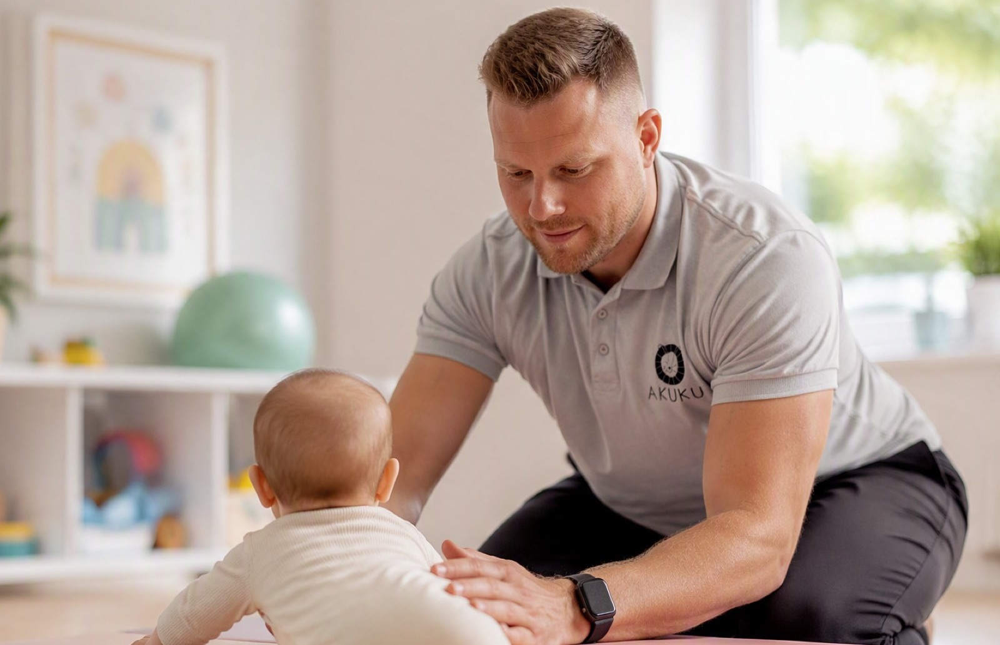
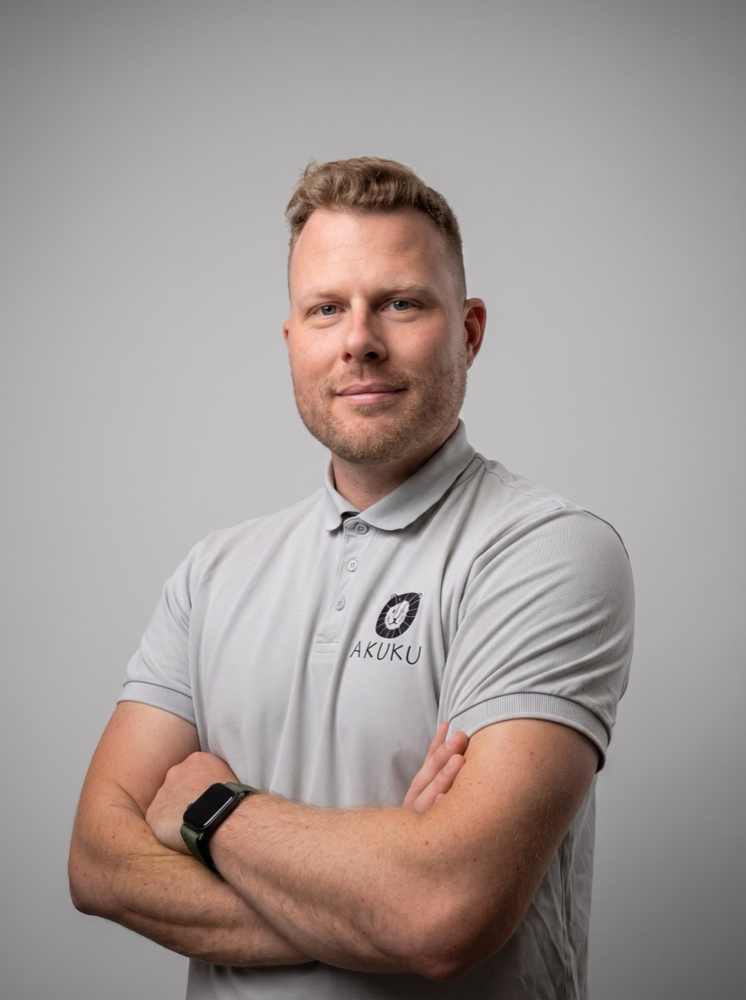
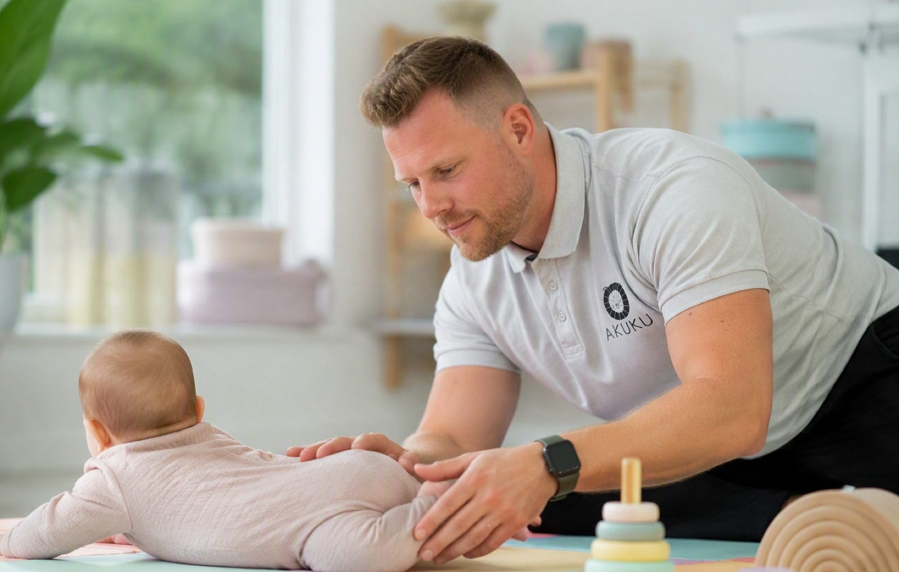

Niemowlęta
Obserwuję, jak dziecko się porusza, oceniam napięcie mięśniowe oraz symetrię ruchów. Pokazuję rodzicom, jak poprzez odpowiednie noszenie, zabawę i codzienną pielęgnację mogą wspierać rozwój swojego dziecka.
Fizjoterapia dziecięca · Gdańsk
Jestem magistrem fizjoterapii z 9-letnim doświadczeniem. Pracuję z niemowlętami od pierwszych dni życia i z dziećmi aż do końca wieku szkolnego, w gabinecie w Gdańsku oraz podczas wizyt domowych.


O mnie
Jestem magistrem fizjoterapii z 9-letnim doświadczeniem, specjalizującym się w pracy z dziećmi, od pierwszych dni życia aż do końca wieku szkolnego. Ukończyłem studia II stopnia na Akademii Wychowania Fizycznego i Sportu w Gdańsku.
Od początku kariery wspieram zarówno niemowlęta z drobnymi trudnościami rozwojowymi, jak i dzieci z niepełnosprawnościami. Obecnie pracuję w Ośrodku Wczesnej Interwencji w Gdańsku. Doświadczenie zdobywałem również w Terapeutycznym Punkcie Przedszkolnym oraz w Ośrodku Rewalidacyjno-Edukacyjno-Wychowawczym.
W swojej pracy szczególnie cenię komfort i poczucie bezpieczeństwa dziecka, a każdą terapię dostosowuję indywidualnie do jego potrzeb.
Jak pracuję
Obserwuję, jak dziecko się porusza, oceniam napięcie mięśniowe oraz symetrię ruchów. Pokazuję rodzicom, jak poprzez odpowiednie noszenie, zabawę i codzienną pielęgnację mogą wspierać rozwój swojego dziecka.
Skupiam się na wspieraniu prawidłowej postawy, koordynacji i sprawności ruchowej, a także na korygowaniu ewentualnych nieprawidłowości, np. wad postawy czy nieprawidłowych wzorców ruchowych.

Tłumaczę, słucham i wspieram, aby rodzice nie czuli się pozostawieni sami z problemem.
Moim celem jest, aby dziecko rozwijało się harmonijnie, z radością odkrywało swoje możliwości, a rodzice mieli praktyczne wskazówki, jak wspierać je w codziennym życiu. Zawsze staram się zrozumieć źródło problemu i dobrać terapię do realnych potrzeb pacjenta.
Mateusz Brzeziński, mgr fizjoterapii
Cennik
Zacznij tutaj
Oceniam rozwój motoryczny, napięcie mięśniowe i symetrię ruchów. Ustalamy plan terapii i omawiamy, jak wspierać dziecko na co dzień.
230 zł / 60 min
Umów konsultacjęWizyta terapeutyczna w gabinecie. Jako fizjoterapeuta dziecięcy wspieram prawidłowy rozwój maluchów od pierwszych dni życia.
190 zł / 60 min
Umów wizytęUsługa mobilna
Ta sama terapia w otoczeniu znanym dziecku. Dojazd: Trójmiasto i okolice.
220 zł / 60 min
Umów wizytę domowąKażda wizyta trwa 60 minut.
Kontakt
Najprościej zarezerwować termin online. Jeśli masz pytania przed pierwszą wizytą, zadzwoń albo napisz. Chętnie podpowiem, czy i kiedy warto przyjść.
Rezerwacja online w Booksy